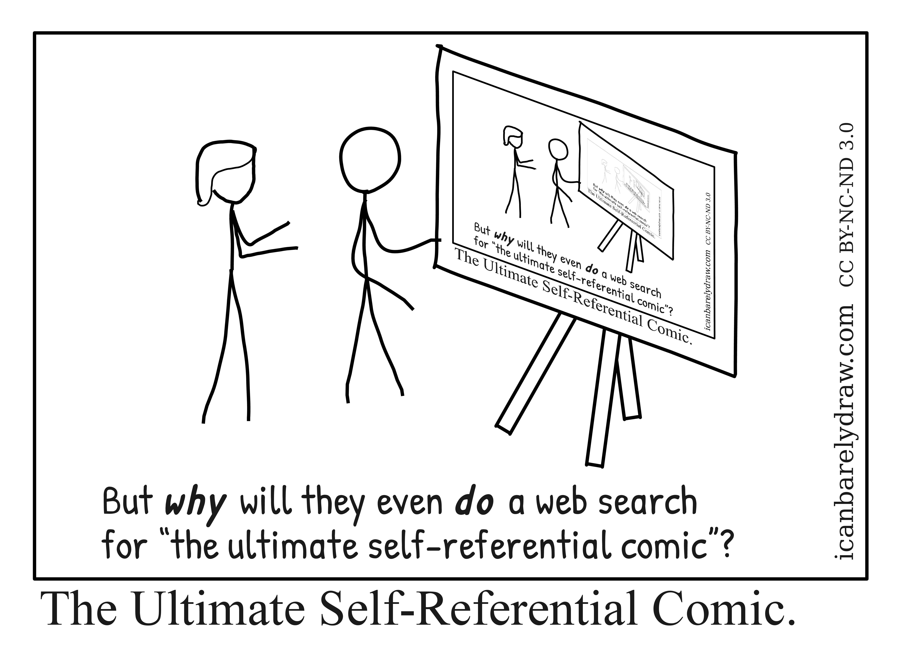

C14 Induction ¶
"We should forget about small efficiencies, say about 97% of the time: premature optimization is the root of all evil."
(in Structured Programming with go to statements Computing Surveys, Vol 6, No 4 1974)
Cours¶
Attention
Ce diaporama ne vous donne que quelques points de repères lors de vos révisions. Il devrait être complété par la relecture attentive de vos propres notes de cours et par une révision approfondie des exercices.
Travaux dirig√©s¶
Travaux pratiques¶
 Exercice 1 : Relation d'ordre¶
Exercice 1 : Relation d'ordre¶
On considère une relation binaire \(\mathcal{R}\) sur un ensemble fini \(\{x_0,\dots,x_{n-1}\}\) représentée par une matrice \(R\) de taille \(n \times n\) telle que \(R_{ij} = 1\) si \(x_i \mathcal{R} x_j\) et 0 sinon pour tout \(0\leqslant i \leqslant n-1\) et \(0\leqslant j \leqslant n-1\). On suppose la matrice \(R\) représentée par un tableau de booléenslinéarisée en C (donc de taille \(n^2\)).
-
Ecrire la fonction
bool est_reflexive(bool * matr, int n)qui prend en entrée la matrice \(R\) et l'entier \(n\) et renvoietruesi et seulement \(\mathcal{R}\) est réfléxive. -
Ecrire la fonction
bool est_antisymétrique(bool * matr, int n)qui prend en entrée la matrice \(R\) et l'entier \(n\) et renvoietruesi et seulement \(\mathcal{R}\) est antisymétrique. -
Ecrire la fonction
bool est_transitive(bool * matr, int n)qui prend en entrée la matrice \(R\) et l'entier \(n\) et renvoietruesi et seulement \(\mathcal{R}\) est transitive. -
Ecrire une fonction
bool * cree_matrice(int n)qui prend en argument un entier \(n\) et renvoie la matrice correspondante à la relation divise sur l'ensemble des entiers naturels de \(1\) à \(n\). Vérifier à l'aide des fonctions précédentes qu'on obtient bien une relation d'ordre.
Exercice 2 : D√©finition inductive des entiers naturels¶
On peut définir les entiers naturels de façon inductive (à la façon de Peano):
- 0 est un entier naturel (axiome)
- tout entier naturel possède un successeur (constructeur d'arité 1)
Ce qui correspond en OCaml au type:
où on a noté Z l'entier 0 et S la règle de construction.
-
Ecrire une fonction
int_to_peano : int -> peanoqui prend en entrée un entier naturelnet renvoie l'entier de peano correspondant. Par exempleint_to_peano 4renvoieS (S (S (S Z))). -
Ecrire une fonction
peano_to_int : peano -> intqui prend en entrée un entier de peano et renvoie l'entier naturel correspondant. Par exemplepeano_to_int S (S (S (S Z)))renvoie 4. -
Ecrire une fonction
add_peano : peano -> peano -> peanoqui renvoie la somme de deux entiers de peano sous la forme d'un entier de peano. Par exempleadd (S (S (S Z))) (S (S (S (S Z))))renvoie S (S (S (S (S (S (S Z))))));;
Exercice 3 : Notation polonaise inverse¶
La notation polonaise inverse est une méthode d'écriture des expressions mathématiques qui n'utilise pas de parenthèses et qui de plus se calcule sans règles de priorité. Prenons un exemple, l'expression \((3+7)\times5\), s'écrit en notation polonaise inversée : \(3\ 7 + 5\ \times\). C'est à dire qu'on donne d'abord les deux opérandes puis l'opération. Le but de l'exercice est d'écrire une fonction en OCaml permettant d'évaluer une expression arithmétique en notation polonaise inverse sur les entiers et ne contenant que les opérations \(+\) (Add), \(-\) (Sub) et \(\times\) (Mul). De telles expressions peuvent être représentées par le type elt list de Ocaml où elt est défini par type elt = V of int | Add | Sub | Mul.
-
Ecrire une fonction
string_to_npi: str -> elt listqui prend en argument une chaine de caractère et renvoie la liste la représentant. Par exemplestring_to_npi "3 7 + 5 *"renvoie[V 3; V 7; Add; V 5; Mul]Aide
Utiliser
String.split_on_charafin de récupérer les différentes composantes de l'expression -
Afin d'évaluer une expression en npi, on peut utiliser une pile : on parcourt l'expression et si on rencontre une opérande on l'empile, si on rencontre une opération on l'effectue entre les deux derniers éléments empilés et on empile le résultat. Mettre en oeuvre cette stratégie afin d'évaluer une expression en npi en écrivant une fonction
evalue_npi : elt list -> intqui prend en argument une liste représentant une expression en npi et renvoie le résultat de con évaluation. Par exempleevalue_npi [V 3; V 7; Add; V 5; Mul]renvoie50. -
Evaluer l'expression suivante :
5 13 + 7 2 - * 14 6 + 8 19 - * 11 2 + * + 19 *et vérifier votre résultat :
Humour d'informaticien¶
